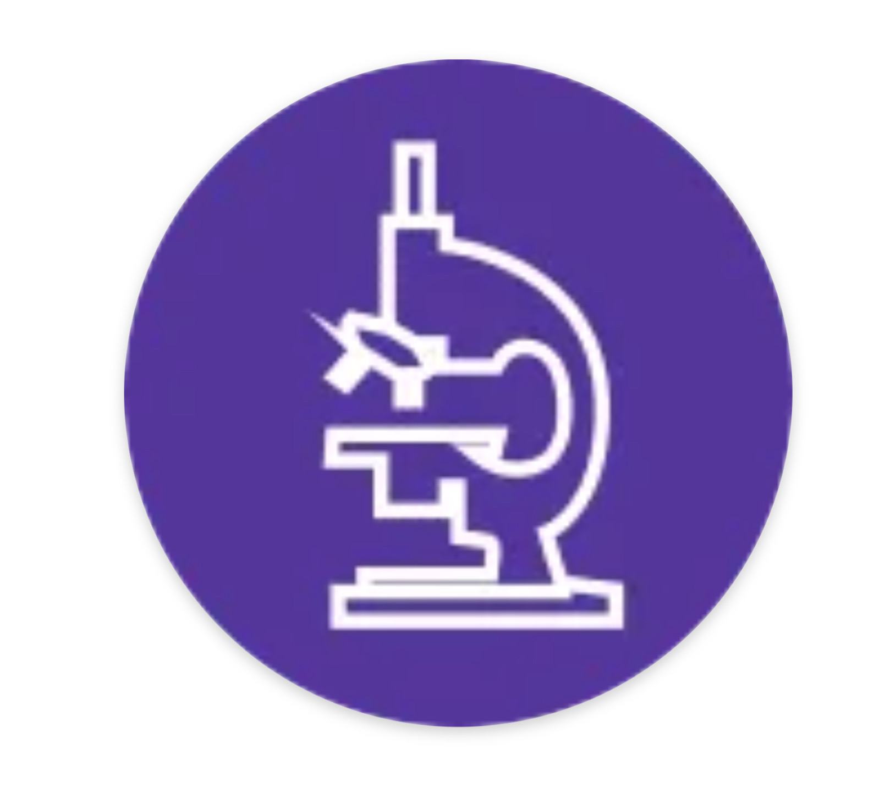

Istituto "Leonardo Da Vinci" - Umbertide

Il Liceo delle Scienze Applicate è un’opzione del Liceo Scientifico che non prevede lo studio del Latino, sostituito dall’Informatica. Il percorso guida lo studente ad approfondire e sviluppare le competenze necessarie a seguire lo sviluppo della ricerca scientifica e tecnologica, favorendo l’acquisizione delle conoscenze e dei metodi propri della matematica, dell’informatica e delle scienze sperimentali. L’area scientifica rappresenta il 56% del piano orario, mentre l’area umanistica ne copre il 44%. In uscita lo studente è capace di individuare le interazioni tra le diverse forme del sapere, dimostrando padronanza dei linguaggi, delle tecniche e delle metodologie relative. Il Liceo delle Scienze Applicate asseconda le vocazioni degli studenti interessati ad acquisire competenze particolarmente avanzate negli studi riguardanti la cultura scientifico-tecnologica, con specifico riferimento alle scienze matematiche, informatiche, fisiche, chimiche e biologiche e alle loro applicazioni. La metodologia della didattica laboratoriale caratterizza fortemente questo indirizzo che privilegia l’apprendimento attraverso il “saper fare”. Forte attenzione è posta alla comprensione del ruolo della tecnologia come mediazione fra scienza e vita quotidiana, all’uso degli strumenti informatici in relazione all’analisi dei dati e alla modellizzazione di specifici problemi scientifici oltre che a riconoscere la funzione dell’informatica nello sviluppo scientifico. Stage formativi ed esperienze di scuola-lavoro, sia con Università che con aziende del territorio, rappresentano ormai una consolidata “buona prassi” del percorso di questo vivace e stimolante indirizzo di studi. Dall’a.s. 2016/2017 è iniziato il Progetto Apple o “classe 2.0”. Si tratta di un percorso formativo che utilizza metodologie fortemente innovative basate sull’uso di strumenti nuovi come I-pad e Apple-TV per interagire con la LIM di desse.
Al termine del percorso si ottiene il Diploma di Liceo Scientifico, opzione Scienze Applicate. 11 titolo consente l’iscrizione a tutte le facoltà universitarie con particolare orientamento a quelle tecnico-scientifiche e informatiche e ai corsi di specializzazione post-secondari. È titolo di accesso ai concorsi pubblici e l’inserimento lavorativo è facilitato dalla capacità di affrontare le innovazioni tecnologiche e di gestire la ricerca.